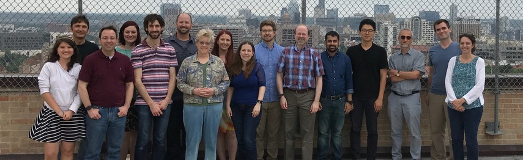

CEERS Team Members
The CEERS collaboration is comprised of 18 CoIs from 12 Institutions, and 100 collaborators from 10 countries.

The CEERS collaboration is diverse on many axes with demonstrated expertise in rapid delivery of high-level science products. Co-I's are identified in the team list below with *.
- PI: Steven Finkelstein, University of Texas at Austin
- Viviana Acquaviva, CUNY/Flatiron CCA
- Omar Almaini, University of Nottingham
- Ricardo Amorín, Universidad de La Serena
- Véronique BUAT, Laboratoire d'Astrophysique de Marseille
- Bren Backhaus, University of Connecticut
- Micaela Bagley, University of Texas at Austin
- Guillermo Barro, University of the Pacific
- Peter Behroozi, University of Arizona
- Eric Bell, University of Michigan
- Rachana Bhatawdekar, European Space Agency (ESA ESTEC)
- Laura Bisigello, INAF Bologna
- Fernando Buitrago, University of Valladolid
- Denis Burgarella, Laboratoire d'Astrophysique de Marseille
- Antonello Calabro, INAF - OAR
- Caitlin Casey, University of Texas at Austin
- Marco Castellano, INAF - Osservatorio Astronomico di Roma
- Seth Cohen, Arizona State University
- Christopher Conselice, Manchester Uni
- Kevin Cooke, University of Kansas
- Mike Cooper, University of California Irvine
- Asantha Cooray, University of California Irvine
- Luca Costantin, Astrobiology Center, Madrid, Spain
- Darren Croton, Swinburne University of Technology
- Emanuele Daddi, CEA Saclay
- Romeel Davé, University of Edinburgh
- Avishai Dekel, The Hebrew University of Jerusalem / UCSC
- *Mark Dickinson, NSF's NOIRLab
- David Elbaz, CEA Saclay
- Vicente Estrada-Carpenter, Texas A&M University
- Sandra Faber, University of California, Santa Cruz
- *Henry Ferguson, Space Telescope Science Institute
- Jesús Vega Ferrero, Instituto de Astrofísica de Canarias (IAC)
- Keely Finkelstein, University of Texas at Austin
- Adriano Fontana, INAF Rome Observatory
- Jonathan Freundlich, Observatoire astronomique de Strasbourg
- Ángela García-Argumánez, Universidad Complutense de Madrid (UCM)
- Jonathan P. Gardner, NASA's Goddard Space Flight Center
- Jonathan Gardner, NASA's Goddard Space Flight Center
- Eric Gawiser, Rutgers University
- Mauro Giavalisco, University of Massachusetts Amherst
- *Andrea Grazian, INAF - Osservatorio Astronomico di Padova
- *Norman Grogin, Space Telescope Science Institute
- Timothy Hamilton, Shawnee State University
- Pablo Arrabal Haro, NSF's NOIRLab
- Nimish Hathi, Space Telescope Science Institute
- Benne Holwerda, University of Louisville
- Marc Huertas-Company, IAC - Observatoire de Paris
- Taylor Alexandra Hutchison, Texas A&M University
- Kartheik Iyer, Dunlap Institute for Astronomy & Astrophysics, University of Toronto
- Saurabh W. Jha, Rutgers University
- Shardha Jogee, University of Texas at Austin
- Stephanie Juneau, NSF's NOIRLab
- Intae Jung, NASA's Goddard Space Flight Center / CUA
- *Jeyhan Kartaltepe, Rochester Institute of Technology
- Susan Kassin, Space Telescope Science Institute
- *Lisa Kewley, Australian National University
- Allison Kirkpatrick, KU
- *Dale Kocevski, Colby College
- *Anton Koekemoer, Space Telescope Science Institute
- Peter Kurczynski, NASA's Goddard Space Flight Center
- Jussi Kuusisto, University of Sussex
- Rebecca Larson, University of Texas at Austin
- Soo Lee, Purdue University
- Gene Leung, University of Texas at Austin
- *Jennifer Lotz, Gemini Observatory/NSF's NOIRLab
- Ray Lucas, Space Telescope Science Institute
- Kameswara Bharadwaj Mantha, University of Missouri Kansas City
- Jasleen Matharu, Texas A&M University
- Elizabeth McGrath, Colby College
- Daniel McIntosh, UMKC
- Emiliano Merlin, INAF
- Bahram Mobasher, University of California, Riverside
- Jeffrey Newman, University of Pittsburgh / PITT PACC
- David Nicholls, Australian National University
- Oscar A. Chavez Ortiz, University of Texas at Austin
- Camilla Pacifici, Space Telescope Science Institute
- Viraj Pandya, University of California Santa Cruz
- *Casey Papovich, Texas A&M University
- *Laura Pentericci, INAF - Osservatorio Astronomico di Roma
- *Nor Pirzkal, Space Telescope Science Institute
- *Pablo G. Pérez-González, Centro de Astrobiología (CAB/CSIC--INTA)
- Marc Rafelski, Space Telescope Science Institute
- *Swara Ravindranath, Space Telescope Science Institute
- Russell Ryan, Space Telescope Science Institute
- Paola Santini, INAF - Osservatorio Astronomico di Roma
- Ekta Shah, Rochester Institute of Technology
- Raymond Simons, Space Telescope Science Institute
- Gregory Snyder, Space Telescope Science Institute
- *Rachel Somerville, Flatiron Institute
- Elizabeth Stanway, University of Warwick, UK
- Amber Straughn, NASA's Goddard Space Flight Center
- Sandro Tacchella, Harvard-Smithsonian Center for Astrophysics
- Harry Teplitz, Caltech/IPAC
- *Jonathan Trump, UConn
- Brittany Vanderhoof, Rochester Institute of Technology
- Alexander de la Vega, Johns Hopkins University
- Weichen Wang, Johns Hopkins University
- Benjamin Weiner, Steward Observatory, U. of Arizona
- *Stephen Wilkins, University of Sussex
- Christopher Willmer, Steward Observatory/University of Arizona
- Isak Wold, NASA's Goddard Space Flight Center
- Stijn Wuyts, University of Bath
- Guang Yang, Texas A&M University
- L. Y. Aaron Yung, NASA's Goddard Space Flight Center
- Jorge Zavala, University of Texas at Austin